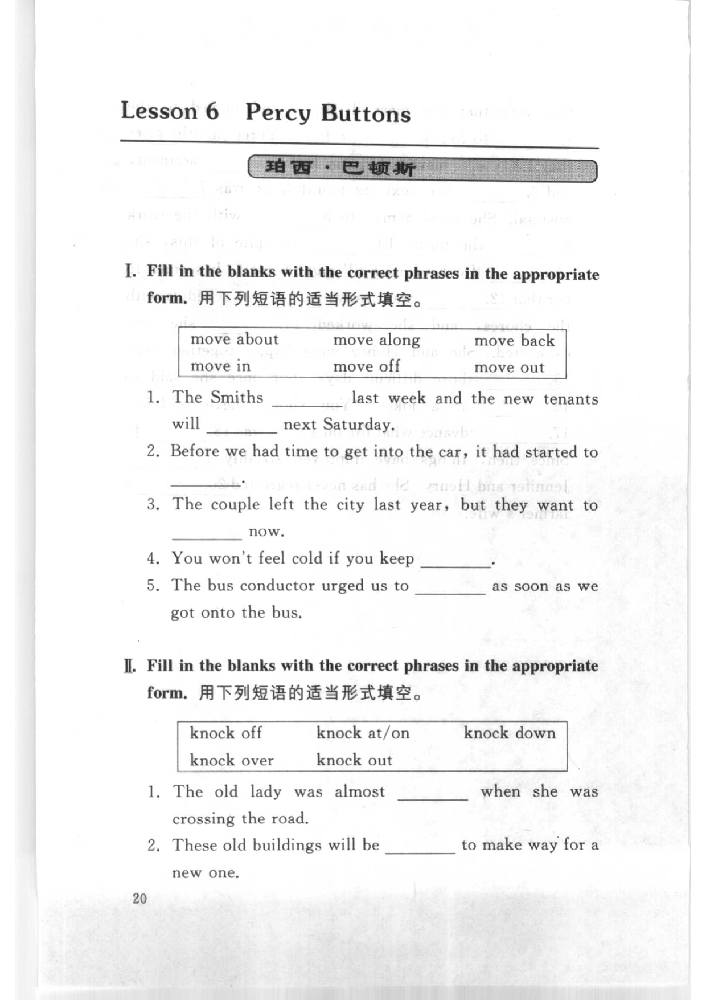
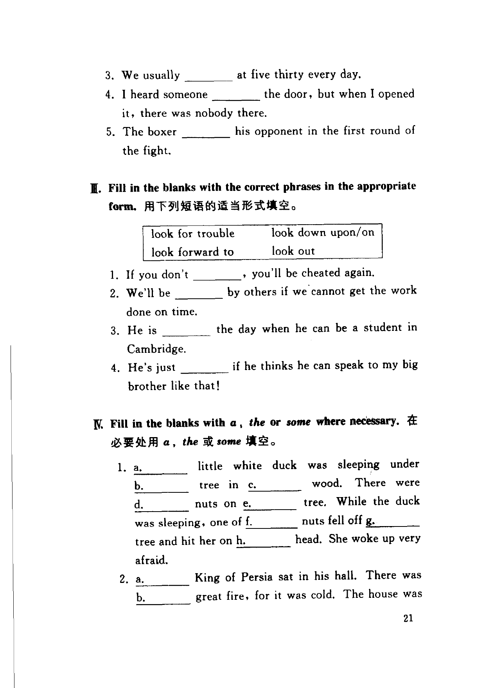
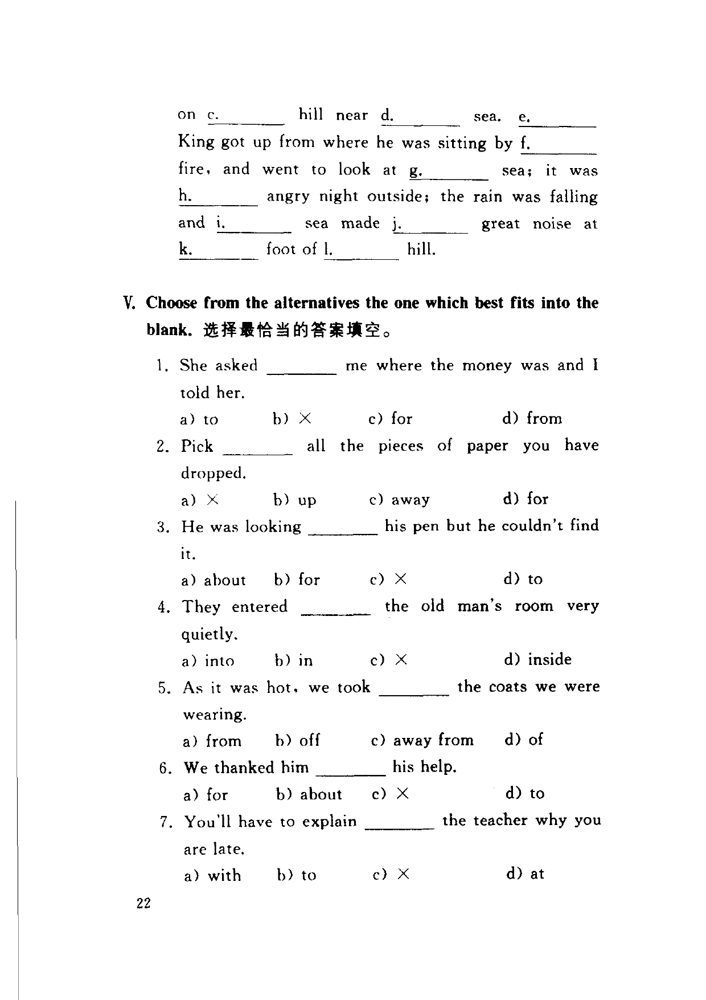

Grammar exercises · 语法练习
I. Fill in the blanks with the correct phrases in the appropriate form.
用下列短语的适当形式填空。
move about · move along · move back · move in · move off · move out
-
I. Move — The Smiths last week and the new tenants will next Saturday.
-
I. Move — Before we had time to get into the car, it had started to .
-
I. Move — The couple left the city last year, but they want to now.
-
I. Move — You won't feel cold if you keep .
-
I. Move — The bus conductor urged us to as soon as we got onto the bus.
II. Fill in the blanks with the correct phrases in the appropriate form.
用下列短语的适当形式填空。
knock off · knock at/on · knock down · knock over · knock out
-
II. Knock — The old lady was almost when she was crossing the road.
-
II. Knock — These old buildings will be to make way for a new one.
-
II. Knock — We usually at five thirty every day.
-
II. Knock — I heard someone the door, but when I opened it, there was nobody there.
-
II. Knock — The boxer his opponent in the first round of the fight.
III. Fill in the blanks with the correct phrases in the appropriate form.
用下列短语的适当形式填空。
look for trouble · look down upon/on · look forward to · look out
-
III. Look — If you don't , you'll be cheated again.
-
III. Look — We'll be by others if we cannot get the work done on time.
-
III. Look — He is the day when he can be a student in Cambridge.
-
III. Look — He's just if he thinks he can speak to my big brother like that!
IV. Fill in the blanks with a, the or some where necessary.
在必要处用 a, the 或 some 填空。
1.
a. little white duck was sleeping under
b. tree in
c. wood. There were
d. nuts on
e. tree. While the duck was sleeping, one of
f. nuts fell off
g. tree and hit her on
h. head. She woke up very afraid.
2.
a. King of Persia sat in his hall. There was
b. great fire, for it was cold. The house was on
c. hill near
d. sea.
e. King got up from where he was sitting by
f. fire, and went to look at
g. sea; it was
h. angry night outside; the rain was falling and
i. sea made
j. great noise at
k. foot of
l. hill.
-
IV. a/the/some — 1.a. little white duck was sleeping
-
IV. a/the/some — 1.b. sleeping under tree
-
IV. a/the/some — 1.c. under a tree in wood
-
IV. a/the/some — 1.d. There were nuts on the tree
-
IV. a/the/some — 1.e. nuts on tree
-
IV. a/the/some — 1.f. one of nuts fell off
-
IV. a/the/some — 1.g. fell off tree
-
IV. a/the/some — 1.h. hit her on head
-
IV. a/the/some — 2.a. King of Persia sat in his hall
-
IV. a/the/some — 2.b. There was great fire
-
IV. a/the/some — 2.c. The house was on hill
-
IV. a/the/some — 2.d. hill near sea
-
IV. a/the/some — 2.e. King got up
-
IV. a/the/some — 2.f. sitting by fire
-
IV. a/the/some — 2.g. went to look at sea
-
IV. a/the/some — 2.h. it was angry night outside
-
IV. a/the/some — 2.i. and sea made
-
IV. a/the/some — 2.j. made great noise
-
IV. a/the/some — 2.k. at foot of the hill
-
IV. a/the/some — 2.l. foot of hill
V. Choose from the alternatives the one which best fits into the blank.
选择最恰当的答案填空。
-
V. Multiple choice — She asked me where the money was and I told her. a) to b) × c) for d) from
-
V. Multiple choice — Pick all the pieces of paper you have dropped. a) × b) up c) away d) for
-
V. Multiple choice — He was looking his pen but he couldn't find it. a) about b) for c) × d) to
-
V. Multiple choice — They entered the old man's room very quietly. a) into b) in c) × d) inside
-
V. Multiple choice — As it was hot, we took the coats we were wearing. a) from b) off c) away from d) of
-
V. Multiple choice — We thanked him his help. a) for b) about c) × d) to
-
V. Multiple choice — You'll have to explain the teacher why you are late. a) with b) to c) × d) at
-
V. Multiple choice — She has a lot of toys but she likes to play her old doll. a) with b) at c) × d) about
-
V. Multiple choice — The prisoner was locked and could not escape. a) × b) for c) on d) up
-
V. Multiple choice — He can't pay all the books he needs. a) for b) to c) × d) by
Original images · 原图对照
Expand a page to compare it with the transcription. Open the original in a new tab to zoom in.
展开原图核对文字，也可以在新标签页打开原图放大查看。
Book page 1 · Exercise I (move phrases) and Exercise II (knock, items 1–2)
Open original · 打开原图 ↗ Download original · 下载原图


Book page 2 · Exercise II (items 3–5), Exercise III (look), and Exercise IV (items 1–2 start)
Open original · 打开原图 ↗ Download original · 下载原图


Book page 3 · Exercise IV (item 2 continued) and Exercise V (items 1–7)
Open original · 打开原图 ↗ Download original · 下载原图



Your notes and answers
Use this space for longer responses or exercises that do not have an individual answer box.